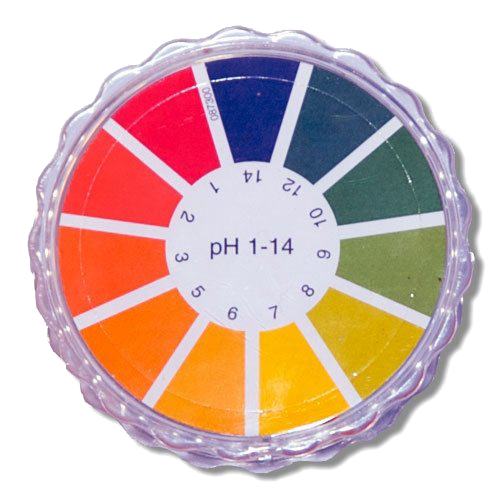
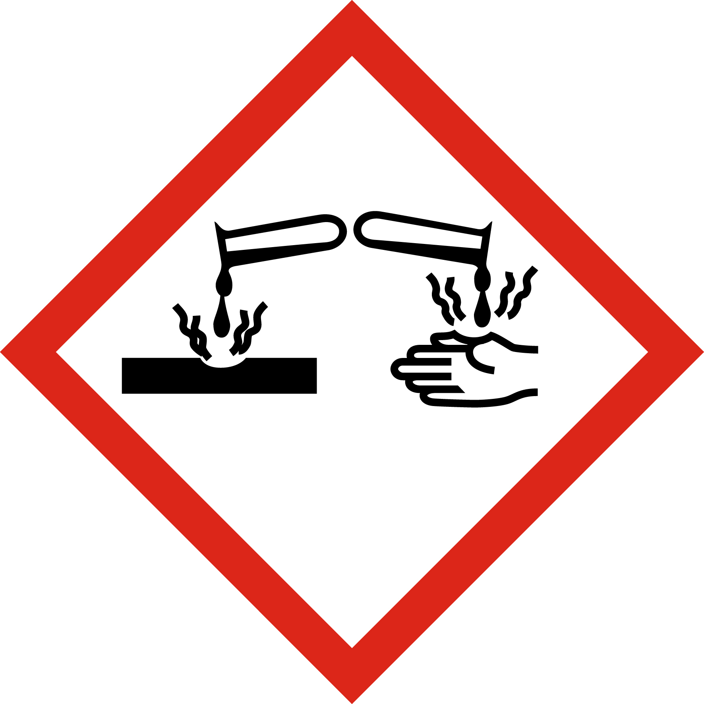

Contexte Professionnel : Traitement de surface à Sainte-Clotilde
Contexte Professionnel : Traitement de surface à Sainte-Clotilde
Les métalliers fabriquent des portails battants et des garde-corps de varangues en acier et aluminium. Avant toute mise en peinture thermolaquée ou soudure de finition, les profilés métalliques doivent subir une préparation de surface rigoureuse par immersion successive dans trois cuves d'atelier :
- un bain de dégraissage alcalin pour éliminer les huiles d'usinage ;
- un bain de décapage/dérochage acide pour éliminer la calamine et les oxydes superficiels ;
- un bain de rinçage à l'eau claire.

Rouleau indicateur de pH (1 à 14)

Pictogramme SGH05 : Corrosif
1. Activité de Découverte : Mesure du pH des Cuves d'Atelier
Au laboratoire de contrôle de l'atelier de Sainte-Clotilde, vous prélevez un échantillon de 50 mL dans chacune des 4 cuves en service. À l'aide du papier indicateur de pH et du pH-mètre électronique étalonné, vous réalisez les mesures.
1. Complétez le tableau d'analyse d'atelier en qualifiant la nature de chaque solution et en identifiant les ions majoritaires manquants :
| Cuve testée | Couleur papier pH | Valeur mesurée (pH) | Nature de la solution | Ion majoritaire présent |
|---|---|---|---|---|
| Cuve 1 : Décapage acier (HCl) | Rouge vif | 1,5 | H⁺ (ou H₃O⁺) | |
| Cuve 2 : Eau de rinçage | Verte pâle | 7,0 | Équilibre H⁺ / OH⁻ | |
| Cuve 3 : Dégraissage soude (NaOH) | Bleu foncé | 12,5 | ||
| Cuve 4 : Dérochage alu (H₃PO₄) | Orange | 2,5 |
2. Classez les quatre cuves de la plus acide à la plus basique selon leur valeur de pH :
3. Quels Équipements de Protection Individuelle (EPI) devez-vous impérativement porter avant de manipuler les éprouvettes de prélèvement des cuves 1 et 3 ?
Synthèse de Cours : Solutions Aqueuses & Mesure du pH
- Solution acide (\(\text{pH} < 7\)) : Contient davantage d'ions \(\text{H}^+\) que d'ions hydroxyde \(\text{OH}^-\). Plus le pH est proche de 0, plus la solution est acide et corrosive pour les métaux.
- Solution neutre (\(\text{pH} = 7\)) : Il y a autant d'ions \(\text{H}^+\) que d'ions \(\text{OH}^-\) (ex : eau pure à 25°C).
- Solution basique / alcaline (\(\text{pH} > 7\)) : Contient davantage d'ions hydroxyde \(\text{OH}^-\) que d'ions \(\text{H}^+\). Plus le pH est proche de 14, plus elle est caustique.
• Papier indicateur de pH : Permet une estimation rapide par virage de couleur avec une précision de l'ordre d'une unité de pH (\(\text{pH} \approx 2\) ou \(\text{pH} \approx 12\)).
• pH-mètre électronique : Appareil de précision constitué d'une sonde de verre étalonnée avec des solutions tampons (pH 4, 7, 10), affichant une mesure précise au dixième ou centième (\(\text{pH} = 1{,}45\)).
Les solutions d'acides forts (\(\text{HCl}\), \(\text{H}_2\text{SO}_4\), \(\text{HNO}_3\), \(\text{H}_3\text{PO}_4\)) et de bases fortes (\(\text{NaOH}\)) portent le pictogramme Corrosif (SGH05).
Règles d'or en atelier : Port obligatoire de gants étanches en nitrile/néoprène (norme EN ISO 374-1), lunettes étanches fermées ou visière intégrale, et tablier anti-acide.
Toujours verser l'acide dans l'eau et JAMAIS l'eau dans l'acide pour éviter les projections bouillantes !
Simulateur Interactif : Banc de Contrôle pH d'Atelier CMA
Ajustez le curseur continu ou sélectionnez un bain prélevé à Sainte-Clotilde pour observer la réponse du papier pH, l'affichage digital et le diagnostic chimique :
Exercice 1.1 (C1) • Identification de l'échelle de pH
Sur l'échelle de pH graduée de 0 à 14 :
1. Borne maximale de la zone correspondant aux solutions acides (\(\text{pH} < \dots\)) :
2. Valeur correspondant exactement à une solution neutre :
3. Borne maximale de l'échelle correspondant aux solutions basiques (\(\text{pH}\) jusqu'à) :
Exercice 1.2 (C1, C2) • Caractérisation de liquides courants d'atelier
Le métallier mesure le pH de plusieurs liquides d'atelier. Précisez la nature de chaque solution :
• Décapant chlorhydrique (\(\text{pH} = 1{,}2\)) :
• Lessive de dégraissage alcalin (\(\text{pH} = 11{,}8\)) :
• Eau distillée de rinçage (\(\text{pH} = 7{,}0\)) :
• Vinaigre blanc de nettoyage (\(\text{pH} = 2{,}8\)) :
• Solution de soude caustique (\(\text{pH} = 13{,}5\)) :
Exercice 1.3 (C2) • Ions responsables de l'acidité et de la basicité
1. Quel est l'ion responsable du caractère acide d'une solution aqueuse ?
2. Quel est l'ion responsable du caractère basique d'une solution aqueuse ?
3. Dans une cuve d'eau pure à \(\text{pH} = 7\), que peut-on dire du nombre d'ions \(\text{H}^+\) par rapport aux ions \(\text{OH}^-\) ?
Exercice 1.4 (C1, C2) • Comparaison des instruments de mesure du pH
1. Quel instrument permet d'obtenir une mesure rapide mais approximative (à l'unité près) ?
2. Quel instrument permet d'obtenir une mesure précise au dixième ou centième d'unité ?
3. Avant d'utiliser un pH-mètre, quelle opération doit-on réaliser avec des solutions tampons ?
Exercice 1.5 (C1, C2) • Pictogramme de danger des acides et bases concentrés
Les bidons d'acide chlorhydrique et de soude caustique portent ce pictogramme.
1. Indiquez la signification de ce pictogramme :
2. Citez les deux EPI obligatoires pour les mains et les yeux lors de l'ouverture du bidon :
Exercice 2.1 (C2, C3) • Surveillance et dérive du pH d'un bain de décapage d'acier à Sainte-Marie
Cuve maintenue entre pH 1,0 et 2,0. Réaction : \(\text{Fe} + 2\,\text{H}^+ \rightarrow \text{Fe}^{2+} + \text{H}_2\).
1. Au cours des jours de travail, la quantité d'ions \(\text{H}^+\) libres dans la cuve augmente-t-elle ou diminue-t-elle ?
2. En déduire si le pH du bain va augmenter ou diminuer au fil des décapages successifs :
3. Lors du contrôle du vendredi soir, le métallier mesure \(\text{pH} = 3{,}8\). Le bain est-il encore efficace ?
Exercice 2.2 (C2, C3) • Effet de la dilution sur une solution acide et sécurité
10 mL d'acide d'atelier (\(\text{pH} = 1{,}0\)) dilués avec 90 mL d'eau distillée.
1. Vers quelle valeur limite tendra le pH si l'on continue d'ajouter de l'eau distillée en très grande quantité ?
2. Une solution acide peut-elle devenir basique (\(\text{pH} > 7\)) par simple ajout d'eau ?
Exercice 2.3 (C3, C4) • Dérochage des profilés alu pour menuiserie tropicale à Saint-Denis
1. Pourquoi un décapage trop agressif (\(\text{pH} < 1{,}0\)) serait-il dangereux pour les tôles minces d'aluminium de 1,5 mm ?
2. Pourquoi un rinçage insuffisant (\(\text{pH} < 5\)) détruirait-il l'adhérence de la peinture sous la chaleur humide réunionnaise ?
Exercice 2.4 (C1, C3) • Neutralisation d'un déversement accidentel de bain acide
5 litres de bain acide à \(\text{pH} = 1{,}5\) se renversent sur le sol en béton de l'atelier de Sainte-Clotilde.
1. Quel type de substance d'atelier doit-on épandre pour neutraliser l'acide (chaux ou bicarbonate) ?
2. Quel sera le pH de la solution une fois la neutralisation complète atteinte ?
Exercice 3.1 (C3, C4) • Traitement des rejets d'atelier selon la réglementation DEAL Réunion
Norme de rejet : 6,5 ≤ pH ≤ 8,5. Cuve de rinçage de 500 L affichant un \(\text{pH} = 3{,}2\).
1. Cette eau de rinçage peut-elle être rejetée directement à l'égout ou en ravine en l'état ?
2. Décrivez la réaction de neutralisation entre les ions \(\text{H}^+\) et \(\text{OH}^-\) : quelle molécule stable est formée ?
3. Pour séparer les boues d'hydroxyde de fer \(\text{Fe(OH)}_2\) formées à \(\text{pH} > 8\), quelle opération physique utilise-t-on avant rejet ?
Exercice 3.2 (C3, C4) • Passivation de cordons de soudure inox et contrôle de pH résiduel
Garde-corps en inox 316L pour passerelle portuaire à Sainte-Marie décapé puis passivé.
1. Pourquoi un test de pH à la bandelette sur le cordon rincé est-il obligatoire avant la livraison au client ?
2. Si un pH résiduel de 3,0 persiste au creux du cordon, quel phénomène va inévitablement se produire sous les embruns marins ?